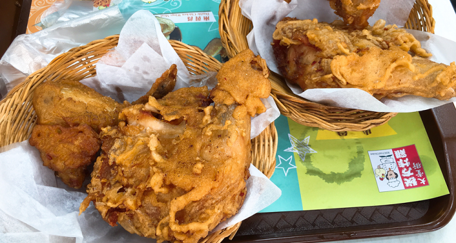
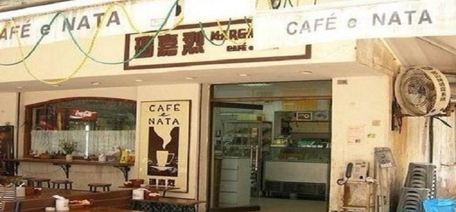

当地美食
#大堂炸鸡#
如果你喜欢吃炸鸡，大堂炸鸡可能是你能遇到的最好吃的炸鸡。刚出炉的炸鸡色泽焦黄，引人食欲。如果小店人不多，你大可以慢慢品味。炸鸡肉质鲜嫩香滑，口感甜酸微辣，人均消费30澳门元左右。
小店在新马路附近，沿着议事亭前地喷水池旁的小斜坡直上约100步可到，小店位于坡顶位置。

图：大堂炸鸡
地址：澳门新马路大堂街14号A-B地下
#玛嘉烈咖啡#
曾是夫妻的玛嘉烈与安德鲁造就了澳门的葡挞传说，这里除了最出名的葡挞，奶茶跟卡布奇诺咖啡都很好喝。这家店不太好找，从葡京往新马路方向走过一间葡语学校，过了红绿灯右拐走五六米会看到一个广告牌，再往内巷走就找到了。虽然十分隐蔽，但一点也不影响生意红火，葡挞一只6澳门元。

图：玛嘉烈咖啡
地址：澳门本岛马统领街金来大厦17B地铺
#盛记白粥#
从议事亭前地过马路，过民政局后往右走，第一个巷口进去30米左右即可到达。“盛记白粥”专营粤式点心，以清淡的白粥为招牌，一碗6澳门元。白粥很香滑，由精选的若干种香米混合磨碎，加入腐皮后慢火熬成。若佐以小店特制的油条，就是一份相当不错的早餐。

图：盛记白粥
地址：澳门雅廉访大马路77号辉时大厦
#帝钧碳烤胡椒饼#
与澳门小吃相遇有时只是一个偶然，帝钧碳烤胡椒饼便是其中之一。经营胡椒饼的小店在新马路大炮台街1C号，逛街时七拐八拐就有可能撞上它。帝钧碳烤胡椒饼源自台湾，现包现烤。据说肉馅用的是前腿猪肉，配以马来西亚胡椒，腌制48小时以上方可使用，酥皮则是加入独创的油酥，以保证饼质皮脆肉嫩。
图：帝钧碳烤胡椒饼
地址：澳门新马路大炮台街1C号
#礼记冰淇淋#
60多年的冰淇淋老店，位于荷兰园大马路荷兰花园大厦旁，装潢十分怀旧，以椰子、香芋、香芒味冰淇淋和红豆雪条闻名。已经少见的冰淇淋三明治和雪砖也可在店内尝到，常有怀旧人士专程而来。搭2号巴士或99A号巴士到塔石/卫生中心站即可到达。
图：礼记冰淇淋
地址：澳门半岛荷兰园大马路12-12A号
#潘威记蛋糕#
一对恩爱的老夫妇和一个有理想的儿子经营的“潘威记”专卖芝士蛋糕。小店位于澳门年轻人聚集的小巷里——天神巷41号。招牌芒果cheese cake、巧克力泡芺口感极好。据说这里的用料都是店主精挑细选并从国外进口的，而蛋糕则出自其儿子的一门好手艺。
图：潘威记蛋糕
地址：澳门半岛天神巷41号（圣约瑟中学旁）
#大利来猪扒包#
氹仔官也街的“大利来猪排包”声名远扬，猪排包是用老式柴炉烘制而成。为了保证质量，店家每天下午3时开始限量销售。猪扒带骨口感一流，分量十足，肉质鲜美爽甜，肉味浓而不油腻，配以用炭炉烤制面饱，外脆内软，令人回味无穷。
图：大利来猪排包
地址：澳门告利雅施利华街35号
#葡国鸡#
澳门最具代表的菜之一，葡国人从非洲及印度食品中学到将鸡块、土豆块混以椰浆和咖喱制成的葡汁，撒上少许葡肠、黑橄榄，放入烤箱中焗烤而成的美食。鸡肉鲜嫩可口，香味浓郁，一般与佐餐酒配合风味更佳
图：葡国鸡
觅食好去处
#官也街#
官也街（Rua da Cunha） 在凼仔南部市区中心，由施督宪正街与告利雅施利华街之间起，至消防局前地。这条只有约115米长，5米宽的小街，是澳门著名的食街之一。
街内中西食肆林立（特别是以葡国餐招徕食客的餐厅），还有数间售卖当地特产（鸡仔饼，咸切酥等饼食以及蚝油，虾酱等）的“手信”（礼物）店。它们吸引了不少游客和澳门市区的居民，平时行人众多，假日更加拥挤。海岛市市政厅于1983年5月1日把它划为全澳第一们行人专用区。
官也街是澳门的老牌美食街，在这条街及附近有很多葡国菜馆、手信店。在氹仔官也街，街道两边密密麻麻开着数十家“手信”商店，摆满了当地特色食品，从盒装的杏仁饼，散装的牛肉干、蛋卷、姜糖，到放在玻璃罐里按两称的话梅、柠檬、八珍果等应有尽有。
每当游客经过时，都会被店家热情相邀品尝，不吃都不行。通常一条街走下来，肚子也饱了，不必再吃正餐。
图：官也街
地址：澳门氹仔南部市区中心
#沙度娜饼屋#
大利来马路对面有家SERRDURA（沙度娜饼屋），店面毫不起眼，却是一家甜品连锁店，且专营一种点心——木糠布丁。在澳门，布丁的地位与蛋挞一样重要。
SERRDURA是葡萄牙文，是木糠布丁的意思，主要由芝士、炼奶和饼干碎混搅、冷冻而成。
这家店采用的是瑞士低脂芝士，比普通的更滑、奶味更香浓。除原味木糠布丁外，小店还研制出朱古力、碎果仁、石板街、榴莲、绿茶、碳烧咖啡、芒果、曲奇等8种不同口味，吃的时候上面撒上一层饼屑以增强口感，看上去很像木屑，“木糠”因而得名。如果中秋来，你还能吃到木糠布丁月饼。
图：沙度娜饼屋
地址：澳门氹仔旧城区巴波沙总督街大利来对面
#诚昌饭店#
位于氹仔的诚昌饭店，以水蟹粥出名。蟹黄与粥水融于一体，泛起一层金黄，诱人夺目。虽标榜水蟹粥，却取了膏蟹、肉蟹和水蟹三种蟹的精华部分，熬出驰名水蟹粥的美味。
电话： +853-28825323
营业时间： 周一至周日12：00-23：30
图：诚昌饭店水蟹粥
地址： 澳门氹仔旧城区官也街28-30号
#安德鲁蛋挞店#
位于路环岛的安德鲁蛋挞店，店主安德鲁是意大利人，曾历任总督厨房的面点师。澳门回归后，他留在岛上发挥一技之长，开了这家蛋挞店。小店每天上午11时开门，下午6时打烊，蛋挞供不应求，美味蜚声海内外。
图：安德鲁葡式蛋挞
地址：澳门威尼斯人大运河购物中心3楼脸谱街870号铺
#小飞象葡国餐#
葡式西餐厅在澳门并不少见，不过真正经典的却是难得，小飞象葡国餐厅就是其中一家，在当地极有名气。餐厅有着显眼的招牌，可爱的小飞象标志特别讨人喜欢。餐厅内部宽敞，装潢简洁又不失温馨，青花瓷砖的墙壁又显出文艺清新范儿。混合乳香的葡国鸡是必点菜品，慕名而来的食客络绎不绝。
电话： +853-28827888
营业时间： 周一至周日11：45-23：00，全年无休。
图：小飞象葡国餐
地址：澳门凼仔地堡街喜来登广场地下A铺连一楼全层（不是喜来登酒店，在旧城区官也街附近）
#义顺牛奶公司#
提到义顺牛奶公司，自然会想到他家的双皮奶，可以说澳门最有名气的甜品店。据说，“义顺牛奶公司”并非源自香港，而是来自澳门。难得的是，这家以其一流的奶制品，成功征服了对甜品异常喜爱和挑剔的港人，进而成为香港人生活中不可或缺的角色，在香港也开了分店。
新马路的这家是最老的店。店里的装饰很古朴，最不能错过的就是双皮奶了，口感超赞，一勺下去非常有质感，入口奶味纯正，香浓软滑。
电话： +853-28573638
图：义顺牛奶公司
地址： 澳门半岛新马路60号（近喷水池）
#添发碗仔翅美食#
超级赞的碗仔翅，虽然可供的选择不多，但也会根据材料的差异，分它个三六九等。东西下料的确很足，汤底味道名不虚传。难怪慕名而来的食客，挤满了这间小店，就算要背靠背地坐着吃，也觉得很满足。
电话： +853-66508211
营业时间： 周一至周日13：00-23：00
图：添发碗仔翅美食
地址： 澳门半岛新马路福隆新街18号地铺
#荣记牛杂#
七十年的老字号，在澳门各区均开设有分店。卖的食材品种与大多数牛杂档相差无几，却能成为牛杂档中的佼佼者，足见其功力。除了牛杂以外，还可以选其他配菜，使美味不单调。煮好后的牛杂、肉丸、蔬菜已让人垂涎三尺，再浇上香浓的独家秘制酱汁，更是让人吃后难以忘怀。
营业时间： 周一至周日11：00-23：00
图：荣记牛杂
地址： 澳门新马路白马行国华戏院地下
#山度士葡式餐厅#
这是一家正宗的葡国餐厅，老板是个会说粤语的葡萄牙人。这家店门面虽小，却内有乾坤。葡式风格的装潢，葡国特色的红白和蓝白格子桌布，满屋的葡国人，加上正宗的葡式料理，是个能让人感受葡萄牙风情的好地方。
电话： +853-2882950
图：山度士葡式餐厅
地址： 澳门氹仔旧城区官也街20号
#沨竹自助餐#
“亚洲风味”的自助餐厅，以日料、粤菜、东南亚风味为主。菜品种类“齐全”，用料“实在”。海螺“新鲜弹牙”，三文鱼“厚切”，口感“好好”，而且上菜速度“快”，基本“不会拿空”；甜品也“不错”，巧克力蛋糕、布丁等，“色味俱佳”。环境“高档”，服务“殷勤”，虽然价格“略贵”，但物有所值。
电话： +853-81189990
图：沨竹自助餐
地址：澳门氹仔/路环路氹连贯公路威尼斯人度假村1楼1033-1035铺（近酒店西翼大堂）
米其林星级餐厅
#天巢法国餐厅#
素有「摘星杀手」之称的JolRobuchon，不到40岁便成为有史以来最年轻、最短时间摘下米其林三星的厨艺鬼才。位于澳门的天巢法国餐厅便是其旗下的餐厅，由传说唯一得到JolRobuchon真传的弟子FranckySemblat掌舵，所有菜色皆由两位共同创想。
餐厅位于新葡京最高楼层，圆拱形的天幕设计是「天巢」命名的由来，中央悬挂着耀眼的施华洛世奇水晶吊灯，整体风格不仅华丽还能引进舒服的自然光。
楼层虽标示为43楼，但实则有52层楼的高度，是全澳门最高的餐厅；加上近360度的环形设计，能将澳门美景尽收眼底。这里的料理有创意却又不失经典，因价格亲民，所以一位难求，建议提早两、三周前预订。
特色美食：香煎缅因龙虾配青豆伴黄酒露及薄荷，煮白芦笋伴淡雅柠檬路 海胆及脆炸鹌鹑蛋，香烤乳猪伴牛肝菌 特式面卷及烩法国白豆，蟹肉鱼籽满天星，红茄鱼鲜三明治，金箔龙虾汤牛肉饺，法式白鸽鹅肝卷，麦穗米球，拿破仑和牛鹅肝汉堡。
电话：+853-88037878
营业时间：
周一至周日： 12：00-14：30； 18：30-22：30
图：天巢法国餐厅
地址：澳门葡京路新葡京酒店43楼
#8餐厅#
主打精致点心、名贵新派广东菜及淮扬菜，连续多年获得米其林三星荣誉。餐厅由香港名设计师设计，布局型格，突显中国元素之余更显独特的气派，餐厅还设有多间独立贵宾房。主厨擅以各地新鲜食材，配搭出创新口味。中午更推出达五十多款创意点心，是私人聚会或宴客的好地方。
特色美食：蓝天使虾金鱼饺 ， 原只乳猪焗饭 ， 脆皮柚子手撕鸡 ， 刺猬梅菜叉烧包 ， 竹笙鱼丸汤 ， 广式澳龙。
电话：+853-88037788
营业时间：
周一至周六： 11：30-14：30；18：30-22：30
周日： 10：00-15：00；18：30-22：30
图：8餐厅
地址：澳门葡京路新葡京酒店2楼
#京花轩（永利酒店）#
京花轩专攻中国传统的川菜和鲁菜，被评为2014年米其林澳门指南二星餐厅。刘国柱大师和他的七位徒弟在京花轩精心演绎中国北方美馔。除了鲁菜及川菜等经典名菜外，京花轩将为宾客带来非凡的清朝官府菜–谭家菜。
谭家菜由祖籍广东的清朝官僚谭宗浚创立，他一生热爱珍馐百味，最终揉合南方及北方菜的特色而创造出享负盛名的谭家菜。受到英国航海帝国时期风格的设计和威尼斯的东方美学所启发，京花轩的设计主题充份体现了中国历史对世界的深远影响。
京花轩的入口附近有多个琥珀色的茶壶倒置于天花上，展现出与别不同的高雅气派，引领宾客进入无以上之的餐饮体验。
特色美食：天府大虾球，茉莉海蚌清鸡汤，酸甜汁鲍鱼，烧海参，水晶肘子，黄焖鱼肚。
电话：+853-89863689
营业时间：
周六，周日： 11：30-14：30；18：00-22：30
周二至周五： 18：00-22：30
图：京花轩（永利酒店）
地址：澳门外港填海区仙德麗街永利澳门酒店地面层
#紫逸轩#
澳门四季的紫逸轩则是澳门唯一连续三年获得米其林二星荣誉的中餐厅。因为米其林的评委多为外国人，所以得以入选指南的中餐厅并不多，一旦入选，便是当之无愧的业内翘楚。
位于四季酒店一楼的紫逸轩，以粤菜为主，一直坚持采用传统烹调方式，专注每一步。拥有巨大的落地窗，用餐时可以看到绿意盎然的窗外风景，阳光偶尔也会透过窗纱洒进来，餐厅显得温馨明亮。
特色美食：煎酿鲜蟹钳，紫逸轩金装拼盘，龙井泡鲜虾球，鲍鱼鸡粒酥，燕窝海龙皇饺，紫逸轩炒饭
电话：+853-28818818
营业时间：
周一至周六： 12：00-14：30；18：30-22：30
周日 ：11：30-15：00；18：30-22：30
图：紫逸轩
地址：澳门氹仔望德圣母湾大马路四季酒店一楼
#誉珑轩#
获授米其林两星殊荣的”誉珑轩”为宾客带来极上珍馐、精雕玉馔，缔造全城最尊尚的粤式餐飨体验。由名厨谭国锋带领的专业厨师团队，于新濠天地创新演绎世界各地鲜活食材及地道美馔，呈献华丽装潢以及细意殷勤的贴心服务，让贵客体会更高层次的多元感官享受。
特色美食：一口和牛酥 ， 誉珑席切蜜汁叉烧 ， 酥炸法国生蚝 ， 誉珑轩炒饭 ， 果木烤鹅 ， 翡翠虾饺
电话：+853-88682822
营业时间：
周一至周日： 11：00-15：00；18：00-23：00
图：誉珑轩
地址：澳门路凼连贯公路新濠天地新濠大道2楼
#皇雀印度餐厅（威尼斯人店）#
餐厅选所用的香料、鲜红的红石榴以至黏土食用器皿均由印度直接进口，而大部食材都是自家调制，所有食品都是根据伊斯兰教的清真标准烹调。
堂食菜品及自助餐美食品种繁多，不论是头盘、主菜或是甜品皆一应俱全。餐厅服务贴心周到，还有水平一流的佳肴及华丽的装潢，而且价钱相宜，是一家大小出外用餐的好去处。
特色美食：缤纷牛油果沙律 ， 焗羊肉印度饭 ， 香烧芥末紫苏羊扒 ， 石榴鸡 ， 煎印式豆蓉饼伴无花果奶酪 ， 印式香辣大虾
电话：+853-81189696
营业时间：周一至周日 11：00-23：00
图：皇雀印度餐厅（威尼斯人店）
地址：澳门路凼城金光大道望德圣母湾大马路澳门威尼斯人度假村酒店1楼1038号
#桃花源小厨#
餐厅环境很是清幽，装潢多用木材质地，特别是连通两侧餐区的过道全以木条做隔断，其朴实质感与葡京酒店本身的富丽堂皇有很大的区别，的确有那么一些桃花源的感觉。餐厅总厨黎有甜有着响当当的名头，师承当年广州江太史家厨李才的徒弟，因此深谙精致粤菜之道，菜品也深受富豪及大酒店的青睐。
特色美食：七彩炒猪肚尖 ， 虾籽炆柚皮 ， 冬瓜蒸原只鲜蟹钳 ， 玻璃明虾球 ， 桂花炒鱼翅 ， 脆皮炸子鸡
电话：+853-88033682
营业时间：
周一至周日： 12：00-14：30；18：30-22：30
图：桃花源小厨
地址：澳门南湾葡京路2-4号葡京酒店东翼大堂
#御膳房#
置身于米其林两星评级的法国餐厅”御膳房”，展开真味探索之旅，每一口都充满惊喜。主厨Guillaume Galliot深信食物的天然真味是美膳的灵魂，巧妙地融会每个细节，引领您寻探味觉艺术的精髓，令每个餐飨体验变成一连串的新发现。
特色美食：Canadian Lobster Confit in Butter， Pan-fried Foie Gras and Bread Emulsion ， 慢煮鸡蛋配薯蓉、帕玛森芝士及洋葱酱 ， 法式龙虾浓汤配苏格兰圣子 ， 焦糖香蕉配焦糖慕斯、花生碎及布朗牛油雪糕 ， 香煎鹅肝配亚枝竹蓉及鸡汁
电话：+853-88686681
营业时间：
周一至周日： 18：00-22：30；00：00-15：00
图：御膳房
地址：澳门路氹城连贯公路新濠天地皇冠酒店三楼
#大厨#
大厨走创新扒房概念，集合日本、澳大利亚、美国、荷兰等等世界各地最顶级的牛扒及游水海鲜供即场挑选，于开放式厨房即席烹调。大厨更有全城最丰富的自助沙律吧、日本寿司吧及自家制甜品，带来全新的扒房文化。
特色美食：Grade 7 Australian Wagyu ， US Boneless Short Ribs ， Pear Tart with Vanilla Ice Cream ， 焗美国蚬伴豚肉 ， 焦糖布丁 ， 波士顿龙虾
电话：+853-88037777
营业时间：
周一至周日：12：00-14：30 ；18：30-22：30
图：大厨
地址：澳门南湾葡京路新葡京酒店3楼珀金楼层